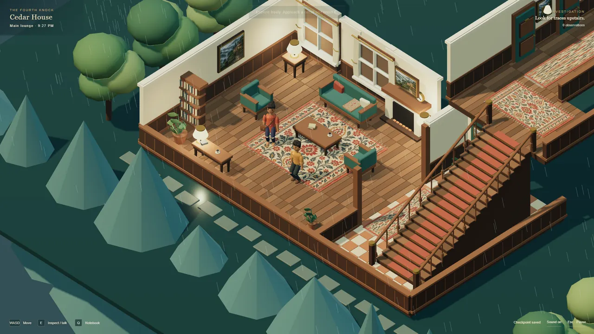
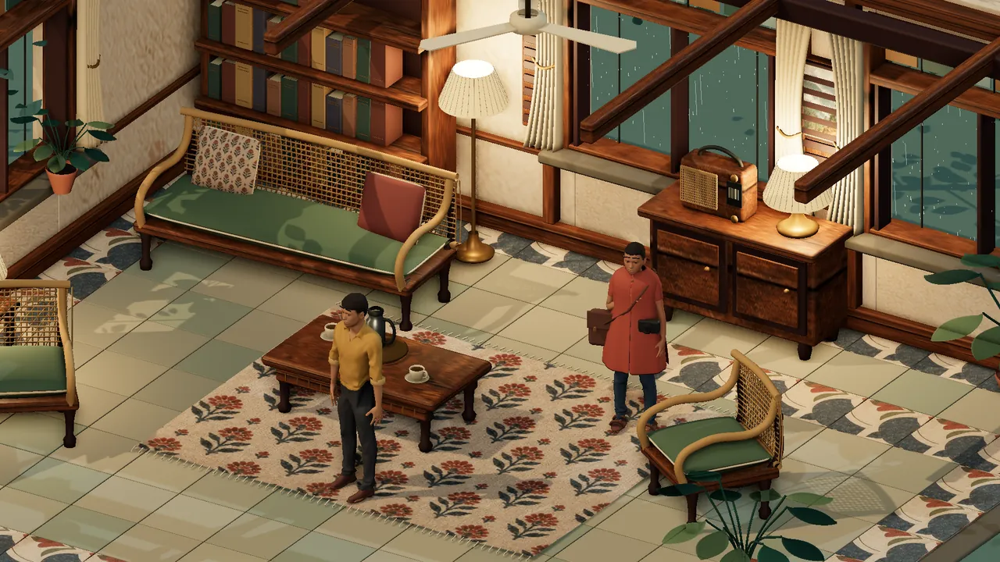
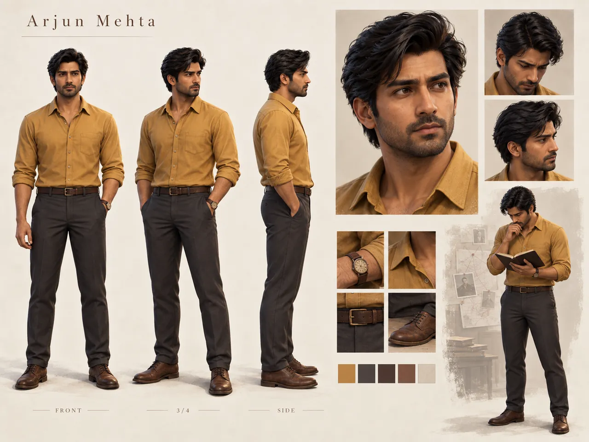
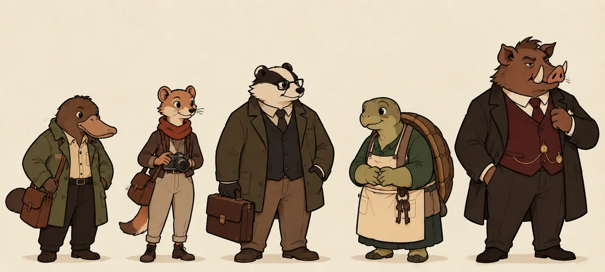
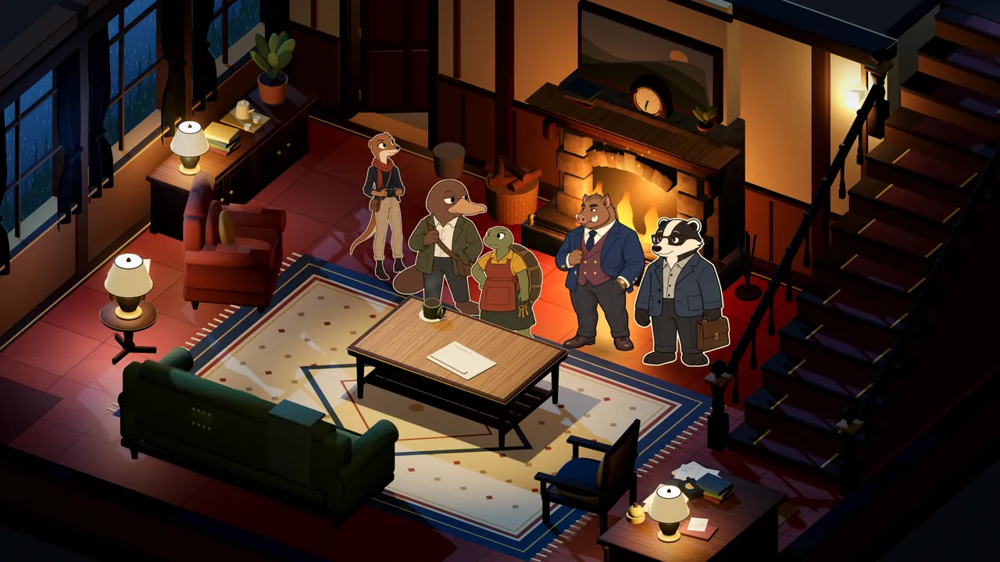

Pivot 1
Full 3D → 2.5D





The first direction was fully 3D: modelled characters in a modelled lounge. On paper it was the more ambitious option. In practice it was harder to keep consistent, more expensive per character and pose, less distinctive, and less suited to a short mystery that lives on faces and reactions.
I stopped it at the visual gate and redirected the whole look. The characters became simple illustrated cutouts, acted through expressive poses, inside a stylised 3D world. That constraint became the game’s identity.
Technical ambition is not the same as creative quality.